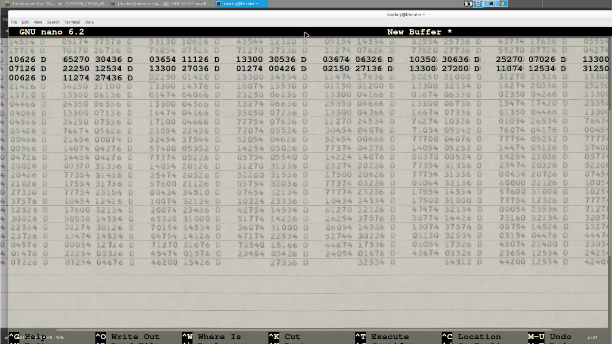
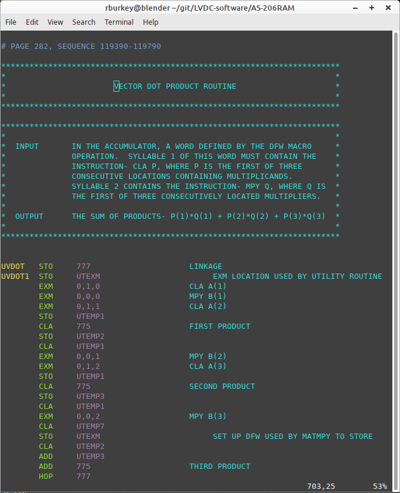
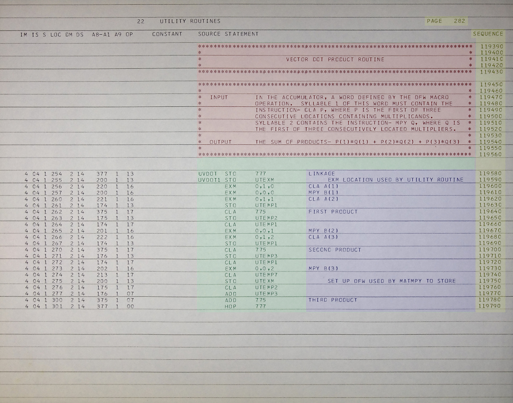
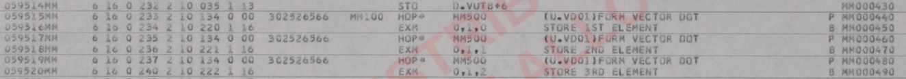
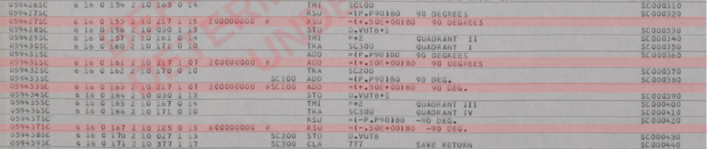
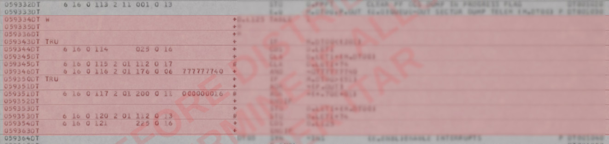
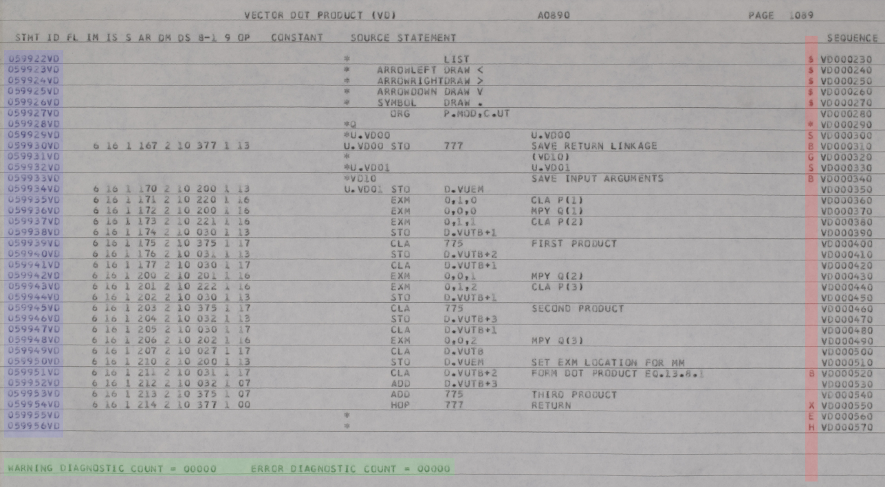

<!DOCTYPE html PUBLIC "-//W3C//DTD HTML 4.01 Transitional//EN">
<html>
  <head>
    <meta http-equiv="content-type" content="text/html;
      charset=windows-1252">
    <title></title>
  </head>
  <body>
    <h1>LVDC Source-Code Transcription Guidelines</h1>
    <p>History:<br>
    </p>
    <ul>
      <li>2023-04-11.&nbsp; First release.</li>
      <li> 2023-04-13.&nbsp; Included hints on demonstrating U.S.
        Citizenship.<br>
      </li>
    </ul>
    <h2>Introduction</h2>
    <p>If you're reading this, I assume you know what the <a
        moz-do-not-send="true" href="LVDC.html">LVDC</a> was, what the
      flight software for it is, and that there are potential ITAR
      restrictions on export of that software from the U.S. are, so I
      won't rehash that territory here.&nbsp; <br>
    </p>
    <p>Rather, this page is solely about the topic of how digitized LVDC
      source-code listings are transcribed into machine-readable
      source-code files (for use with our modern yaASM.py assembler),
      and what the basic standards and conventions for those transcribed
      files are.<br>
    </p>
    <p>At this writing, three LVDC flight programs are known to have
      survived, and have already been digitized.&nbsp; As for their
      transcription status:<br>
    </p>
    <ul>
      <li>AS-206RAM, already transcribed (~400 pages)<br>
      </li>
      <li>AS-512, next to be transcribed (~1400 pages)<br>
      </li>
      <li>AS-513, to be transcribed at some future time (~1000 pages)<br>
      </li>
    </ul>
    <p>The LVDC flight software was essentially completely rewritten
      between AS-206RAM and AS-512, so in transcribing AS-512 and
      AS-513, there is little possibility of reducing our effort by
      cut-and-pasting from AS-206RAM.&nbsp; Whereas AS-512 and AS-513,
      in contrast, will likely turn out to have very long stretches of
      code that are identical to each other.&nbsp; Regardless of these
      similarities or the lack thereof, the standards applied to the
      AS-206RAM transcription will be applied also to the AS-512 and
      AS-513 transcriptions.&nbsp; I'll use AS-206RAM as my example in
      some of the descriptions that follow.<br>
    </p>
    <p>Digitized assembly listings are supplied to you as encrypted PDF
      files and/or as encrypted (7z) archives of JPG files.&nbsp; It
      will be your own choice as to which is best for you.&nbsp; Each as
      some advantage over the other, but I won't bore you with my
      assessments of those.<br>
    </p>
    <p>An LVDC flight program consists of an introductory section (which
      <i>we</i> will refer to as "MAIN"), followed by a sequence of
      "modules".&nbsp; There is an index of the modules, by name, within
      the first few pages of each LVDC assembly listing.&nbsp; For
      example, in AS-512, there are 77 such sections.&nbsp; We
      transcribe each of these sections as a separate source-code
      file.&nbsp; For AS-512, we thus have the 77 source-code files<br>
    </p>
    <blockquote>
      <p>MAIN.lvdc<br>
        GFP_DATA_PACK.lvdc<br>
        GFP_EXECUTIVE_MACRO_DEFINITIONS.lvdc<br>
        ...<br>
        SIMULTANEOUS_MEMORY_ERROR.lvdc<br>
      </p>
    </blockquote>
    The filenames are massaged forms of those in the assembly listings'
    module indices, but the exact manner in which they are massaged
    shouldn't concern you, since we handle that aspect of the process
    for you.<br>
    <h2>Procedure</h2>
    <p>If you want to involve yourself in the transcription process,
      notify us by email at info AT sandroid.org.&nbsp; Note that the
      reply will likely come from a different email address, so if you
      don't receive a response within (say) a day, perhaps you should
      check your spam filter.&nbsp; <br>
    </p>
    If you haven't already done so in the past, you will be asked to
    provide some evidence that you are "U.S. person" as required by
    ITAR.&nbsp; The most-common way to be considered a U.S. person is to
    be a citizen, though there are other ways as well.&nbsp; <br>
    <blockquote><font size="-1"><b>Aside:</b>&nbsp; What proves you're a
        U.S. citizen?&nbsp; I'm not a lawyer, but googling U.S.
        Government websites that purport to answer the question, here's
        a formula that works:&nbsp; Have <i>both</i> of the following:</font><br>
      <div class="moz-text-html" lang="x-unicode">
        <meta http-equiv="content-type" content="text/html;
          charset=windows-1252">
        <ol>
          <li><font size="-1">Photo I.D., such as a driver's license.<br>
            </font> </li>
          <li><font size="-1">One of the following documents:<br>
            </font> </li>
          <ul>
            <li><font size="-1">A valid, unexpired U.S. passport. <br>
              </font> </li>
            <li><font size="-1">A U.S. birth certificate.</font></li>
            <li><font size="-1">A Consular Report of Birth Abroad
                (FS-240).</font></li>
            <li><font size="-1">A naturalization certificate (N-550).</font></li>
            <li><font size="-1">A certificate of citizenship (N-560).</font></li>
          </ul>
        </ol>
        <font size="-1">For our purposes here, I'd suggest you might do
          the following:<br>
        </font>
        <ol>
          <li><font size="-1">Take a legible photo of the front of your
              driver's license.</font></li>
          <li><font size="-1">Take a selfie of you holding the driver's
              license up to your face so that I can verify it's yours.</font></li>
          <li><font size="-1">Take a photo of whatever page of your
              other document (passport etc.) indicates your U.S.
              citizenship or birth.<br>
            </font></li>
          <li><font size="-1">(Optional) Use software like Photoshop to
              blur out any personal information (such as your street
              address, parents' names ... whatever) that you don't want
              to share with a complete stranger on the internet (me!),
              as long as it doesn't prevent me from determining your
              citizenship.</font></li>
          <li><font size="-1">Send me the 3 photos.<br>
            </font></li>
        </ol>
      </div>
    </blockquote>
    <p>Once we consider you to be a U.S. person, you'll be provided
      access to digitized LVDC program listings, as well as a snapshot
      of an encrypted git repository containing existing transcribed
      source-code files.&nbsp; Note, however, that this transcription
      effort is not being managed via a git repository (or
      more-specifically, by a github repository), because we perceive no
      way to do that while still complying with ITAR.&nbsp; Thus you can
      ignore the provided git repository or not, as suits you, but you
      will <i>not</i> be submitting your transcriptions using it!<br>
    </p>
    <p>Rather, you will transfer source-code files to us via the
      following 2-step process:<br>
    </p>
    <ol>
      <li><b>Compress and </b><b><i>encrypt</i></b><b> the source-code
          file with 7z or zip</b>.&nbsp; You are free to use the same
        password which you are supplied for accessing the digitized
        assembly-listing files, or to invent your own.&nbsp; Of course,
        if you do the latter, you'll have to inform us what the password
        is.<br>
      </li>
      <li>Email the <b>compressed, encrypted file</b> to us (<i>separately</i>
        from the password).&nbsp; We will then add it to the git
        repository if it is acceptable, or (potentially) reject it for
        rework if not.<br>
      </li>
    </ol>
    The first section transcribed by any volunteer will be assigned to
    you from among the shortest remaining untranscribed modules.&nbsp;
    However, subsequent files may be chosen from the remaining
    untranscribed modules according to your personal interests.&nbsp; In
    all cases, you are supplied with a correctly-named source-code file
    that includes a header in our required form, and your responsibility
    is merely to add the transcribed source code to it.<br>
    <h2>A Choice of Formats:&nbsp; .lvdc vs .lvdc8<br>
    </h2>
    I mentioned earlier that an LVDC source-code file will have a
    filename such as GFP_DATA_PACK.lvdc.<br>
    <br>
    Unfortunately, that statement is an oversimplification.&nbsp; The
    source-code files you transcribe <i>may</i> have an extension of
    ".lvdc", but they may instead be given a filename extension of
    ".lvdc8".&nbsp; Thus you could have a source-code file named
    GFP_DATA_PACK.lvdc8 instead of GFP_DATA_PACK.lvdc.&nbsp; That's
    because we accept two slightly-different formats for these
    transcribed files, and the two filename extensions indicate which of
    the two formats the file is in.<br>
    <ul>
      <li>A filename extension of ".lvdc" indicates a format that we
        would <i>prefer</i> to have, but which you may (or admittedly
        may not) consider more-challenging and time-consuming to
        produce.</li>
      <li>A filename extension of ".lvdc8" indicates a less-preferred
        format that you may consider less-challenging to create.</li>
    </ul>
    <p>The differences between these formats, along with hints for
      simplifying production of the ".lvdc" format, will be covered as
      the discussion progresses below.&nbsp; It's entirely up to you to
      decide which format you want to attempt for any given file.&nbsp;
      We expect each ".lvdc8" file <i>eventually</i> to be replaced by
      an ".lvdc" file, regardless of the form in which you submit it,
      but don't let that concern you.&nbsp; Let <i>us</i> worry about
      conversions.&nbsp; Make <i>your</i> decision on the basis of your
      own preferences alone.<br>
    </p>
    <p>By the way, as I already mentioned, once you choose (or we choose
      for you) a module to be transcribed, we'll send you a mostly-empty
      source-code file into which you will add the transcribed source
      code.&nbsp; We'll make every effort to send you whichever file
      format (.lvdc vs .lvdc8) that we think you're going to
      attempt.&nbsp; But we could be wrong, or you could change your
      mind, so you need to know how to change the type of one of these
      mostly-empty files.&nbsp; Once you've added transcribed source
      code to it, changing your mind is much harder, and I won't bother
      trying to describe that.&nbsp; With these nearly-empty files,
      though, there are two simple steps.&nbsp; First, rename the file
      from <i>whatever</i>.lvdc to <i>whatever</i>.lvdc8, or
      vice-versa.&nbsp; Second, the file itself begins with a header
      that may read something like this:<br>
    </p>
    <blockquote>
      <p><font face="Courier New, Courier, monospace">#
          Copyright:&nbsp;&nbsp;&nbsp; Public domain.<br>
          # Restrictions: Presently, treat as if export from U.S. is
          restricted by ITAR.<br>
          # Filename:&nbsp;&nbsp;&nbsp;&nbsp;
          ABSOLUTE-COMMAND_FREEZE_UTILITY.lvdc<br>
          # Purpose:&nbsp;&nbsp;&nbsp;&nbsp;&nbsp; This is a portion of
          LVDC flight program AS-512, as <br>
          &nbsp;&nbsp;&nbsp; &nbsp; &nbsp;&nbsp;&nbsp;
          &nbsp;&nbsp;&nbsp; &nbsp; .<br>
          &nbsp;&nbsp; &nbsp;&nbsp; &nbsp;&nbsp;&nbsp;
          &nbsp;&nbsp;&nbsp; &nbsp; .<br>
          &nbsp;&nbsp;&nbsp; &nbsp;&nbsp;&nbsp; &nbsp;&nbsp;&nbsp;
          &nbsp;&nbsp;&nbsp; .</font><br>
      </p>
    </blockquote>
    Just change where it says ".lvdc" in the third line to ".lvdc8" (or
    vice-versa).<br>
    <p>But what is the difference between the two file formats?&nbsp; In
      brief, the situation is this:&nbsp; LVDC assembly code as it was
      used back in the original Apollo project days, was strictly
      aligned to specific columns within the punch-cards on which the
      source code was supplied.&nbsp; Whereas today, we no longer use
      punch-cards, but instead use text-editor software in which
      maintaining specific columnar alignment isn't something we
      normally worry about.&nbsp; When we do have to worry about exact
      columnar alignment in source code, we usually hope to rely on tab
      stops at regular (often 8-column) intervals.&nbsp; But a constant
      tab-width of 8 is <i>not</i> what the original LVDC punch cards
      used.&nbsp; Nearly so ... but not <i>quite</i>, and we believe
      that this slight difference in tab positioning is enough to fool
      one into making formatting errors during transcription.<br>
    </p>
    <p>So another way of looking at ".lvdc" vs ".lvdc8" is this:<br>
    </p>
    <ul>
      <li>The ".lvdc" format means that you are exactly reproducing the
        columnar alignment of all of the source code, including the
        comments.</li>
      <li>The ".lvdc8" format means that you are instead relying on your
        text editor's tab stops (with a tab-width of 8), and are making
        somewhat of an effort to align the comments but are probably
        failing to do so perfectly.</li>
    </ul>
    <p>With all that said, there are tricks that can be used to make
      ".lvdc" actually <i>easier</i> to produce than ".lvdc8" ...
      except that those tricks probably rely on using specific text
      editors in specific ways that most people would not be inclined to
      engage with.&nbsp; In other words, these tricks may not be
      possible with the text editors you are familiar with, and you may
      be unwilling to change to an alternate editor.&nbsp; Thus your
      decision to use .lvdc vs .lvdc8 may come down to whatever's
      convenient with the text editor you insist upon using.&nbsp; But
      we're coming to that choice in the next section.<br>
    </p>
    <h2>Selecting and Configuring Your Text Editor:&nbsp; .lvdc vs
      .lvdc8<br>
    </h2>
    <h3>Selecting the Text Editor<br>
    </h3>
    <p>Recall that I said earlier that we'd accept transcriptions in
      either a (preferred) format called .lvdc or else in a (possibly
      simpler) format called .lvdc8, and that the particular format you
      choose to use will likely depend on the characteristics of the
      text-editing software you are willing to use.&nbsp; If at any
      point while reading this section you feel that it's just not worth
      the hassle, then you've made the definite choice to just produce
      .lvdc8 files and should just use the text editor of your choice
      and immediately <a moz-do-not-send="true" href="#lvdc8">advance
        to the section on configuring your text editor for .lvdc8.</a><br>
    </p>
    <p>The most-significant characteristic your text-editor � or
      rather, your text-editor plus your operating system � can have
      to simplify your transcription effort, and in particular your
      ability to easily produce the .lvdc format, is what I call
      "transparency".&nbsp; By transparency, I mean the ability to see
      through the editing area of your text-editor program to the
      desktop underlying it.&nbsp; The following screenshot from my own
      desktop should make this idea clear:<br>
    </p>
    <div align="center"><br>
      <div align="left"><br>
        In this picture, what has happened is that on my desktop I have
        used a JPG viewer to open up a digitized page I wish to
        transcribe.&nbsp; Then, I opened up a text-editor program, which
        happens to be called <b>nano</b>, and maneuvered <b>nano</b>'s
        window in front of the image of the digitized page and
        configured it to be partially transparent.&nbsp; Thus when I
        type into <b>nano</b>'s window, the text I type can be made to
        overlay the same text on the digitized page.&nbsp; Of course, if
        you <i>don't</i> have transparency it's not a disaster, but I
        think you can see how transparency might make transcription much
        easier and more accurate than (say) putting the digitized page
        and the text editor side-by-side, especially in terms of exact
        columnar alignment.<br>
        <br>
        Admittedly, it's not <i>quite</i> as easy as I make it out to
        be.&nbsp; Other than configuring the transparency you have to be
        able to adjust the font type and font size used by your text
        editor so that the character width corresponds well to the
        horizontal spacing of the scan.&nbsp; Getting everything scaled
        and positioned usefully can be a pain, particularly once you
        realize that not all of the digitized images of the assembly
        listing are necessarily scaled identically, so that some page-by
        page scaling adjustments may be needed.<br>
        <br>
        Which text-editors have transparency on which operating
        systems?&nbsp; Yes, that's certainly a question, isn't it?<br>
        <br>
        My <i>personal</i> preference would be a GUI-based text
        editor.&nbsp; The bad news is that so far, I've found none (on
        any operating system) that support transparency.&nbsp; (Well, to
        be fair, EMACS may or may not support it in some sense on some
        platforms.&nbsp; Unfortunately, like everything in EMACS, an
        innocent bystander such as myself can't understand a single
        thing the aficionados say about it, not even the instructions on
        how to achieve it, so I can neither confirm nor deny that it can
        do it, and am certainly in no position to recommend it.)<br>
        <br>
        The good news is that if you can make the terminal window (i.e.,
        the "command line") partially transparent on your operating
        system, then <i>any</i> text editor which operates with that
        terminal window will be transparent as well.&nbsp; Alas, by
        using one of these purely text-based editors, you lose the
        ability to position the cursor using a mouse, and thus must rely
        on keyboard arrow keys to move the cursor around instead.<br>
        <br>
        In my experience, command-line transparency of a terminal window
        can be easily configured in Linux and Mac OS.&nbsp; Admittedly
        I'm stuck back at Mac OS 10.7.5 and have no information about
        modern versions.&nbsp; Similarly, I've read that you can have
        command-line transparency in Windows 10, but I'm personally
        stuck back on Windows 7 where you cannot.&nbsp; On the other
        hand, even in Windows 7 <a moz-do-not-send="true"
          href="https://sourceforge.net/projects/console/">you can
          install an open-source replacement for the command-line window</a>
        which does allow you to set its transparency.&nbsp; Regardless
        of platform, I'd suggest initially setting the opacity somewhere
        in the neighborhood of 15-20% for transcription purposes.<br>
        <br>
        I don't know whether any current operating systems still have
        native command-line-window text editors.&nbsp; For example,
        Windows use to have such an editor, called <b>edit</b>, but
        apparently no longer does.&nbsp; But even if not, there are
        editors which operate within the command-line window and are
        available on all three of Linux, Mac, and Windows.&nbsp; Those
        include:<br>
        <ul>
          <li><b>vim</b> <br>
          </li>
          <li><b>nano</b></li>
        </ul>
        <p>I'm sure there are other suitable editors that are
          cross-platform or single-platform-only, but I'm presently
          mostly ignorant of them.&nbsp; Of the two mentioned, <b>nano</b>
          is much simpler to use for casual users, while <b>vim</b>
          (which has a steeper learning curve) is typically used by
          those of us who consider ourselves power users and look down
          on the rest of you peons.&nbsp; (Joke!&nbsp; Personally, I
          prefer <b>nano</b>, thus look down even on myself with
          disdain.)&nbsp; <br>
        </p>
        <p>On the other hand, <b>vim</b> has the nice advantage that we
          actually have LVDC syntax-highlighting for it.&nbsp; Perhaps
          surprisingly, this syntax-highlighting is helpful even during
          transcription, since if certain elements of the code are
          aligned at the wrong columns, they may have an obviously-wrong
          color.&nbsp; You can see an example of highlighting
          below.&nbsp; The example is from the AS-206RAM vector
          dot-product utility, which I've chosen since as a pure
          mathematical method it would seem to have no ITAR
          restrictions; we'll see more of it later on.<a
            name="SyntaxHighlighted"></a><br>
        </p>
        <p align="center"><br>
        </p>
        <div align="left"><br>
          If you do intend to use <b>vim</b>, and you do want to set it
          up for LVDC syntax highlighting, <a moz-do-not-send="true"
            href="lvdc_vim.zip">download this zipfile</a> and uncompress
          it.&nbsp; In the uncompressed folder you'll find two other
          folders, ftdetect/ and syntax/.&nbsp; There's some folder on
          your system that holds <b>vim</b> syntax-highlighting
          options, though unfortunately I don't know what it is and
          you'll have to google it to find out.&nbsp; On my own Linux
          system, that folder happens to be ~/.vim/, though it didn't
          exist at first and I had to create it myself.&nbsp; At any
          rate, once you figure out the folder you're supposed to use,
          and/or you create it, then you should copy ftdetect/ and
          syntax/ into it.&nbsp; From now on, whenever you open a .lvdc
          or .lvdc8 file with <b>vim</b>, it will be
          syntax-highlighted.<br>
        </div>
        <h3>Configuring the Text Editor for .lvdc</h3>
        <p>If you're here, you've chosen to at least try to maintain
          exact columnar alignment of both source code and program
          comments in your transcription.&nbsp; <br>
        </p>
        <p>LVDC source-code files are maintained with UNIX-style line
          endings (i.e., line-feed characters) rather than Windows-style
          line ending (i.e., a pair of characters, carriage-return
          followed by line-feed).&nbsp; These are the line endings
          always used in Linux and (modern versions of) Mac OS.&nbsp; If
          you are using Windows and are going to be using a text-editor
          that can handle UNIX-style endings, please configure it to do
          so.&nbsp; If you can't, then let us know, so that we can
          translate source-code files to have the proper line-endings
          before sending them to you or receiving them from you.&nbsp;
          Or you can do it yourself with readily-available utility
          programs (google it!).&nbsp; But since translating each file
          separately is obviously something that's prone to confusion
          and error, it's preferable if the editor itself can handle it
          by itself it at all possible.<br>
        </p>
        <p>You should configure the editor to automatically convert tab
          characters to spaces if possible.&nbsp; If you can do that,
          and if you can set arbitrary tab stops (vs tab stops only at
          regular intervals), then counting the first column as column 1
          you'll want to set tab stops at columns 8 and 16, with
          subsequent tab stops after that being anywhere that takes your
          fancy.&nbsp; (At first glance, this may appear to be the same
          as the default setup of text editors, in which the tab width
          is 8; but it's not, because in that situation the tab stops
          would be at columns 9, 17, 25, 33, etc.)<br>
        </p>
        <p>If you <i>cannot</i> configure the editor to automatically
          convert tabs to spaces, then you should set the tab width to 8
          ... but recognize that you're probably not going to want to
          use the tab key all, and resign yourself to using the space
          bar almost all of the time.<br>
        </p>
        <h3><a name="lvdc8"></a>Configuring the Text Editor for .lvdc8</h3>
        If you're here, you've chosen to minimize your transcription
        effort, at the cost of losing exact columnar alignment of source
        code and (probably) of program comments.<br>
        <br>
        LVDC source-code files are maintained with UNIX-style line
        endings (i.e., line-feed characters) rather than Windows-style
        line ending (i.e., a pair of characters, carriage-return
        followed by line-feed).&nbsp; These are the line endings always
        used in Linux and (modern versions of) Mac OS.&nbsp; If you are
        using Windows and are going to be using a text-editor that can
        handle UNIX-style endings, please configure it to do so.&nbsp;
        If you can't, then let us know, so that we can translate
        source-code files to have the proper line-endings before sending
        them to you or receiving them from you.&nbsp; But since
        translating each file separately is obviously something that's
        prone to confusion and error, it's preferable if the editor
        itself can handle it by itself it at all possible.<br>
        <p>Set the editor's tab width to 8.<br>
        </p>
      </div>
    </div>
    <h2>Anatomy of an LVDC Assembly Listing</h2>
    <p>Here is a sample page of the assembly listing of AS-206RAM which
      I've marked up in color to illustrate those parts of an assembly
      listing that are relevant to our transcription effort.&nbsp; Since
      this code just describes a mathematical method for a well-known
      standard operation (the vector dot product), I can't imagine ITAR
      has any relevance to it, and so I simply present it as-is:<br>
    </p>
    <p align="center"><br>
    </p>
    In broad terms, the following is an explanation what the coloring in
    the picture means, although there are additional details we'll come
    to later that alter the general statements somewhat:<br>
    <ul>
      <li>The portion in <font color="#666666">gray</font> is
        irrelevant to the transcription effort and can simply be
        ignored.&nbsp; <br>
      </li>
      <li>The portion in <font color="#009900">green</font> is
        source-code, and is supposed to be fully transcribed.&nbsp; It's
        divided horizontally into three portions:&nbsp; <br>
      </li>
      <ul>
        <li>An optional "label" (<tt>UVDOT</tt> and <tt>UVDOT1</tt> in
          this example).&nbsp; These are always aligned at the leftmost
          column (column 1) in the transcription.<br>
        </li>
        <li>An LVDC "opcode" or "pseudo-op" (<tt>STO</tt>, <tt>EXM</tt>,
          <tt>CLA</tt>, ...).&nbsp; In an .lvdc transcription, these are
          always aligned at column 8, while in an .lvdc8 transcription
          these are always aligned at the first tab stop (column 9).<br>
        </li>
        <li>An optional operand (<tt>777</tt>, <tt>UTEXM</tt>,
          ...).&nbsp; In an .lvdc transcription, these are always
          aligned at column 16, while in an .lvdc8 transcription these
          are always aligned at the second tab stop (column 17).<br>
        </li>
      </ul>
      <li>The portion in <font color="#ff0000">red</font> consists of
        full-line comments and is supposed to be fully
        transcribed.&nbsp; It's distinguished by the fact that the '*'
        character appears in column 1.&nbsp; In an .lvdc transcription,
        every character in the comment is supposed to have an exact
        columnar alignment corresponding to the original listing, and
        it's up to you to figure out what that alignment is!&nbsp; In an
        .lvdc8 transcription ... well, make your best effort to get them
        lined up properly.&nbsp; As a rule of thumb for .lvdc8 files,
        I'd note that the problem comes in when you try to judge the
        alignment of full-line comments by using the source code above
        or below it as reference.&nbsp; The alignment of source code in
        .lvdc files vs .lvdc8 files agrees until column 8 is reached,
        but at subsequent columns all source code in .lvdc8 files is one
        position to the right of corresponding code in .lvdc
        files.&nbsp; So in other words, in .lvdc8 files, you can
        reference comments easily to source code in columns 1-8, but in
        subsequent columns you want to reference the comment to source
        code one column to the left of where you'd otherwise naively try
        to align it.&nbsp; Yes, that's a mouthful, and I wouldn't be
        surprised if you ignored it.<br>
      </li>
      <li>The portion in <font color="#993399">purple</font> consists
        of inline comments and is supposed to be fully
        transcribed.&nbsp; It's any text that follows the legal LVDC
        opcodes and operands on a line after some intervening white
        space, but preceding the sequence number at the end of the
        line.&nbsp;&nbsp; The rules for columnar alignment are the same
        as for full-line comments.&nbsp; Incidentally, don't infer from
        the picture above (as you might if not warned) that the comment
        area begins at some specific column; as I said, anything
        following the source-code operand is the comment.&nbsp; Some
        source-code operands are so long that they intrude into the
        purple area shown as an example above, but that doesn't make
        them comments!<br>
      </li>
      <li>The portion in <font color="#cc9933">yellow</font> isn't
        transcribed, but certain summary data is extracted from it and
        added to comments in the transcribed code to help
        cross-reference the source-code files to the original assembly
        listing.&nbsp; The information specifically needed is the page
        number (282 in this example), the title in the heading at the
        top of the page ("22 UTILITY ROUTINES"), the starting sequence
        number (119390), and the ending sequence number (119790).&nbsp;
        Incidentally, in the AS-512 and AS-513 assembly listings, you'll
        find that the sequence numbers aren't just 6-digit numbers as
        shown above, but have 2-letter alphabetic prefixes as well, such
        as "VD000230".&nbsp; The 2-letter prefixes are part of the
        sequence numbers, and not part of the comment areas preceding
        them.&nbsp; In other words, the 2-letter prefixes of sequence
        numbers are <i>not</i> transcribed as comments, though they are
        included in the starting- and ending-sequence numbers extracted
        as summary data.<br>
      </li>
    </ul>
    Even more generally, it may be helpful to remember (or learn) that
    the physical punch-cards on which the source code was supplied
    allowed for 80 columns of information.&nbsp; In terms of the picture
    above, the first column in the <font color="#009900">green</font>
    and <font color="#cc0000">red</font> areas is column 1 of the
    punch-card, the final column in the <font color="#cc0000">red</font>
    and <font color="#993399">purple</font> areas is column 72, and the
    <font color="#cc9933">yellow</font> card-sequence-number area
    occupies columns 73-80 (though only 6-digit card-sequence numbers
    are used in the image above, so a couple of those columns are blank
    spaces).<br>
    <br>
    As for what the source code looks like after transcription, <a
      moz-do-not-send="true" href="#SyntaxHighlighted">we already saw it
      earlier as an example of syntax highlighting</a>.&nbsp; The line
    at the very top of that transcription of the transcribed page reads<br>
    <blockquote><tt># PAGE 282, SEQUENCE 119390-119790</tt><br>
    </blockquote>
    You'll notice that this doesn't seem to be a line that's actually in
    the original assembly listing.&nbsp; It's an example of what I call
    a "modern comment" (<a moz-do-not-send="true" href="#Modern">to
      which an entire section is devoted below</a>), and in this case it
    happens to be where you present the summary data extracted from the
    <font color="#cc9933">yellow</font> areas.&nbsp; There's one of
    these modern comments with the page-number for each transcribed
    page.&nbsp; As it happens, I transcribed AS-206RAM years ago, and
    the thinking on what goes into one of the page-specific modern
    comments has changed somewhat since then.&nbsp; The more-recent
    thinking, which I'd like to follow in the AS-512 and AS-513
    transcriptions, is that the comment should instead read something
    like:<br>
    <blockquote><tt># PAGE 282, SEQUENCE 119390-119790, TITLE "22
        UTILITY ROUTINES"</tt><br>
    </blockquote>
    However, it usually happens that the title in the page header
    doesn't change very often from page-to-page, so for labor-saving
    reasons there's no need to add the <tt>TITLE</tt> field to these
    comments unless the title has actually changed from title of the
    preceding page.&nbsp; As for the question of whether you need to
    preserve the exact spacing within the title, I don't personally see
    any reason to clutter up these title with lots of extra spaces, but
    I'd leave it up to you.<br>
    <br>
    If you're really attentive to detail, you may notice in the
    transcription that the <font color="#993399">inline-comment portion</font>
    does not align as I claim it ought to.&nbsp; According to what I
    said earlier, the L in <tt>LINKAGE</tt> should be immediately under
    the D of <tt>PRODUCTS</tt> of the bottom-most full-line comment,
    but it's not.&nbsp; That's not because I'm lying about the standard
    we're trying to maintain, but simply because I was apparently lazy
    when I transcribed this code.&nbsp; Which is to say that I
    transcribed it as an .lvdc8 file rather than an .lvdc file, and just
    aligned the comments at some convenient tab stop rather than
    striving to make the columnar alignment exact.&nbsp; <br>
    <br>
    As I mentioned above, there are some assembly-listing quirks you
    need to worry about that weren't included in the generalized
    description earlier.&nbsp; Several of these quirks involve things
    that appear in what I've called the source-code area but which need
    not or must not be transcribed.&nbsp; Consider the following few
    lines from the AS-512 matrix-multiply code:<br>
    <br>
    <div align="center"><br>
      <br>
      <div align="left">There's actually no such LVDC instruction as <tt>HOP*</tt>.&nbsp;


        The instruction is just <tt>HOP</tt>, but the assembler added
        the "*" next to it for its own reasons.&nbsp; Thus the "*"
        needn't be transcribed, and should instead be replaced with a
        space.&nbsp; But it's no disaster if you do transcribe it, since
        we'll find it (eventually) and fix it anyway.<br>
        <br>
        Then too, consider these lines from the AS-512 sine-cosine
        utility:<br>
        <br>
        <div align="center"><br>
        </div>
        <br>
        The lines in highlighted in red <i>must</i> be discarded in
        their entirety and not transcribed.&nbsp; They are distinguished
        by the fact that they have a '#' character in the column
        immediately preceding the source code area; besides which, they
        have no punch-card sequence number at the far right.&nbsp; (If
        you're interested, what's happening here is that the line above
        each of these has an operand which involves arithmetic performed
        by the assembler itself at assembly time.&nbsp; For
        informational purposes, the assembler repeats the line, but with
        the calculated value shown explicitly.&nbsp; But if this
        informational line appeared in the transcription, it would
        basically be a duplication of the line above it, and thus would
        be assembled twice.&nbsp; Not good.)<br>
        <br>
        The example below shows another type of line which <i>must not</i>
        be transcribed ... and which will save you a lot of work by not
        transcribing them.&nbsp; (Don't let the blurring of the source
        code confused you.&nbsp; I grabbed this example from a random
        page of the AS-512 program listing and although it seemed
        obviously harmless to national security, I couldn't immediately
        come up with a satisfying bureaucratic argument.&nbsp; It was
        easier to simply to blur it out.)&nbsp; The LVDC assembler is a
        so-called "macro assembler", meaning that one can define macros
        consisting of sequences of assembly-language instructions;
        wherever the name of the macro appears in the source code, the
        assembler automatically expands the macro into the predefined
        sequence of instructions.&nbsp; That's what has happened in this
        example.&nbsp; As a courtesy, the assembler also shows you the
        instructions it expanded the macro into.&nbsp; Which is fine,
        except that when you transcribe it you want to just transcribe
        the invocation of the macro, and not the expanded form of the
        macro.&nbsp; Because again, if both the macro invocation and the
        expanded macro appeared in the transcribed source code, it would
        essentially result in it being assembled twice.&nbsp; The
        expanded form of the macro is distinguished by the "+" character
        in the column immediately preceding the source-code area, and in
        the fact that there are no punch-card sequence numbers at the
        far right, as you can see even in spite of the blurring:<br>
        <br>
        <div align="center"><br>
        </div>
      </div>
    </div>
    <br>
    Some more quirks are seen in the code from AS-512 that corresponds
    to the AS-206RAM VECTOR DOT PRODUCT code sampled above:<br>
    <br>
    <div align="center"><br>
    </div>
    <br>
    You'll notice that the sequence numbers do have 2-letter prefixes
    (in this case, "VD") as I already mentioned, and thus are fully 8
    characters in length.&nbsp; But just preceding those sequence
    numbers, notice the characters highlighted in <font color="#cc0000">red</font>.&nbsp;


    You might be pardoned for assuming that these seemingly-nonsensical
    symbols were generated by the assembler, but in fact these are
    indeed part of the full-line comment and inline comment areas, and
    are transcribed as part of the comments.&nbsp; They appear very
    often throughout the listing.&nbsp; As far as columnar alignment is
    concerned, recall that I said earlier that the comment area of a
    punch-card ends at column 72, while the card-sequence numbers occupy
    some or all of columns 73-80.&nbsp; In the image above, you can see
    that the these funky red character are separated from the
    card-sequence numbers by a single space, so at least for this sample
    page, they are in column 71.&nbsp; For AS-512 and AS-513, you should
    always be able count backward from the card-sequence numbers in this
    manner to determine the proper column alignment of the funky
    characters.<br>
    <br>
    Notice also the area highlighted in <font color="#009900">green</font>.&nbsp;


    At the end of each module in AS-512 and AS-513 is an block of
    material generated by the assembler.&nbsp; These areas include
    summary information about errors, symbol cross-reference tables (not
    shown in the image), and so on.&nbsp; <i>These areas are not to be
      transcribed</i>.&nbsp; You should be able to distinguish these
    areas easily, since they simply don't look like the source-code
    areas do; in particular, they don't have punch-card sequence numbers
    at the ends of the lines.&nbsp; But unfortunately, beyond that hint
    I can't give you some specific rule for recognizing them, and I'm
    afraid you'll simply have to learn to do so by experience.<br>
    <br>
    As far as the <font color="#663366">purple</font> area is
    concerned, it's yet another kind of sequence number, generated by
    the assembler rather than being punched on the cards, and isn't
    transcribed.&nbsp; There's nothing really that you have to know
    about it other than the fact that the assembler-generated
    information appearing between modules won't have these sequence
    numbers.<br>
    <h2><a name="Modern"></a>Modern Comments, Required and Optional<br>
    </h2>
    <p>As mentioned above, the original LVDC code had two comment
      mechanisms:&nbsp; <i>full-line</i> comments occupy an entire
      line, and are distinguished by having the character '*' in column
      1; whereas <i>inline</i> comments simply follow legal LVDC code
      on any given line, and do not have any distinguishing mark to
      prefix them.<br>
    </p>
    <p>However, these mechanisms do not suffice to handle all of the
      program comments we'd like to have in our transcriptions.&nbsp;
      We'd like to add our own comments that didn't appear in the
      original code, but that remain distinguishable from the original
      comments so that they cannot be confused with them.&nbsp; For this
      reason we introduce a third kind of comment that we'll call a
      "modern comment".&nbsp; In the example earlier, you saw the line <br>
    </p>
    <blockquote>
      <p><tt># PAGE 282, SEQUENCE 119390-119790, TITLE "22 UTILITY
          ROUTINES"</tt> <br>
      </p>
    </blockquote>
    which begins with "#" rather than "*" in column 1.&nbsp; This is a
    modern comment.&nbsp; The leading "#" is characteristic of modern
    comments, whereas for the original LVDC assembler it would simply
    have been a syntax error.&nbsp; Modern comments are identical in
    every respect to the original full-line comments, except for the
    difference in the leading character, and in the fact that we choose
    to syntax-highlight them using a different coloring.<br>
    <br>
    Each transcribed page is required to have a modern comment like the
    sample above.&nbsp; Such page-comments have the following
    information in them:<br>
    <ol>
      <li>The page number from the upper-right corner of the original
        page image.&nbsp; (<i>Not</i> the PDF page number!)<br>
      </li>
      <li>The page's first and last punch-card sequence numbers.&nbsp;
        In AS-512 and AS-513, recall that the punch-card sequence
        numbers have 8 characters, including a 2-letter alphabetic
        prefix, in contrast to the 6-digit AS-206RAM sequence numbers in
        our example comment.<br>
      </li>
      <li>The title from the page's header, if changed from the
        preceding page.&nbsp; (I.e., it can be omitted if the title is
        unchanged.)<br>
      </li>
    </ol>
    <p>Similarly, each source-code file is required to begin with a
      file-header, consisting of "modern comments", giving the filename,
      modification history, and so on.&nbsp; These headers are present
      when the source-code file is given to you, but you should modify
      the modification-history portion of the header (using new modern
      comments) to describe the work you've done on the file.&nbsp;
      Here's the header from the transcribed file that I took the
      example code above from:<br>
    </p>
    <pre># Copyright:    Public domain.
# Restrictions: Presently, treat as if export from U.S. is restricted by ITAR.
# Filename:     UTILITY_ROUTINES.lvdc8
# Purpose:      This is LVDC flight program AS-206RAM (1967), as 
#               transcribed directly from the assembly listing. 
#               The transcription does not include individual line 
#               numbers, but does indicate the range of card sequence 
#               numbers for each page of the listing.
# Assembler:    yaASM.py
# Contact:      Ron Burkey <info@sandroid.org>.
# Website:      www.ibiblio.org/apollo/LVDC.html
# Page images:  Inquire
# Mod history:  2023-04-01 RSB  Split from monolithic file LVDC-AS206RAM.lvdc.<br>#               2023-04-09 RSB	An example of an added change notice. <br></info@sandroid.org></pre>
    <p>To add a new entry to the modification history, beginning with
      '#' in column 1, you'd align the date field, initials field, and
      comment-text fields with the existing line that's already
      there.&nbsp; The date format, YYYY-MM-DD is some ISO standard, the
      name of which I've forgotten.<br>
    </p>
    <p>As far as optional modern comments are concerned, I can't really
      offer criteria at this time for adding them.&nbsp; But if, for
      example, you're transcribing a page with a handwritten notation,
      adding a modern comment to describe that handwritten notation
      would seem to be a good use of the modern-comment facility. <br>
    </p>
    <h2>Other Portions of the Assembly Listings, and an Exception<br>
    </h2>
    <p>Beyond just source code, assembly listings include other
      assembler-generated material as well.&nbsp; We've already seen
      that diagnostic summaries and symbol cross-reference tables may be
      generated by the assembler between source-code modules.&nbsp; But
      there are other assembler-provided sections that may appear prior
      to any source-code module or after the final source-code
      module.&nbsp; Example are:&nbsp; lists of cards which have been
      added or removed, symbol tables, octal listings of the assembled
      executable, and so forth.&nbsp; This extra material differs on a
      listing-by-listing basis, and I won't attempt to categorize all of
      the possibilities for you.&nbsp; Suffice it to say that any page
      of an assembly listing which doesn't have the obvious
      characteristics of those described in the preceding sections
      doesn't need to be transcribed.&nbsp; You can inquire if there's
      uncertainty.<br>
    </p>
    <p>But there is an exception, if you happen to be transcribing the
      introductory "MAIN" section of code.&nbsp; That exception is the
      module index.<br>
    </p>
    <p>In the AS-206RAM assembly listing, the module index is actually a
      set of full-line comments in the source code, so there's no
      question that it should have been transcribed.&nbsp; But in AS-512
      and AS-513, while the module index is of a confusingly-similar
      appearance, it nevertheless seems to have been auto-generated by
      the assembler rather than having been derived from full-line
      comments in the source code; there are no page headings, no page
      number, no card sequence number, and the columnar alignment is
      wrong.&nbsp; Strictly following the rules already mentioned, we'd
      just ignore these module indices and not transcribe them.<br>
    </p>
    <p>Nevertheless, these module indices are extremely-convenient to
      have.&nbsp; It's hard to reconcile their usefulness with simply
      omitting them.&nbsp; My executive ruling is that they <i>should</i>
      be transcribed, but as "modern comments".&nbsp; (See the preceding
      section.)&nbsp; The good news is that I've already done some of
      the work of transcribing them:&nbsp; In each of the folders
      AS-512/ and AS-513/ in the provided git repository, you find a
      file called stubTitles.txt.&nbsp; These files contain the names of
      the modules, and can be used to facilitate addition of the modern
      comments to the transcription.<br>
    </p>
    <p><br>
    </p>
  </body>
</html>
